Over time I have written many, many, many programs and scripts. Many of them I abandon eventually. Here's a list of some of the projects I have abandoned.
This page doesn't include maintenance mode projects (e.g. MtnLog) and projects that don't need any more maintenance, such as useless-sh.
If you want to continue the development of any of the projects listed, then go ahead, no one is stopping you. Fork the repo and add the changes you think are necessary.
Look at the de-compiled source code
Dodge Them All was the first time I used Java for game development. It's a simple 2D game where you dodge colored squares. It's kind of like Touhou but without attacks or bomb and it's theoretically infinite. I made it when I was like 10.
The game was published on GameJolt here. It even has a description:
I can't decide whether this description is cute or cringe.
So, how is the game actually like? Does it live up to the description? Let's take a look.
Opening up the game, we see the title screen:
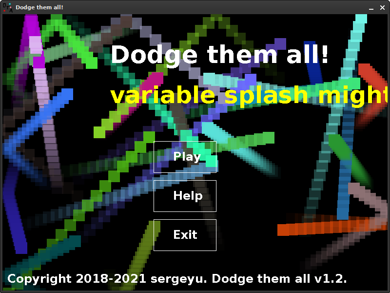
Dodge Them All title screen
This is.. a title screen alright. Also it runs at like 5fps, which is not that surprising considering my system is really slow and the title screen background has bouncing blocks all over the place.
Now let's finally look at the gameplay! Pressing play we are greeted to the following.
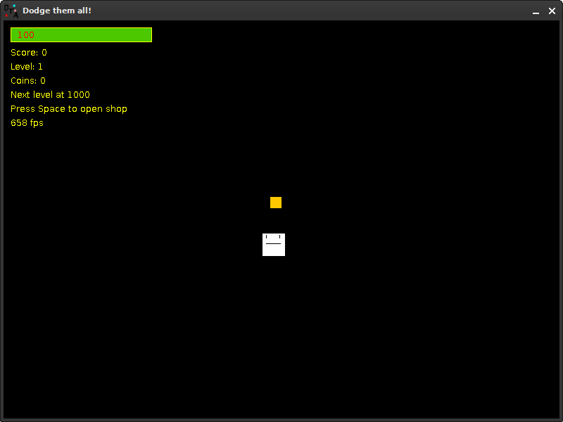
Dodge Them All gameplay
The game runs quite poorly even outside of the title screen. Really shows that I put zero effort into optimizing this game, doesn't it? Whatever. Right off the bat, we can see:
Each time you level up, an enemy spawns. Also, I encountered a bug where after going to the next level my character started constantly going down for no reason. Bugs are something this game has a lot of. I did do some play testing but ultimately I had no idea what I was doing and couldn't really solve many issues. For example, there's a bug that causes coins not to produce sounds after collecting them (accompanied by an exception).
The player has 100 health initially. When you run out of health, the game is over. The game over screen looks like this.
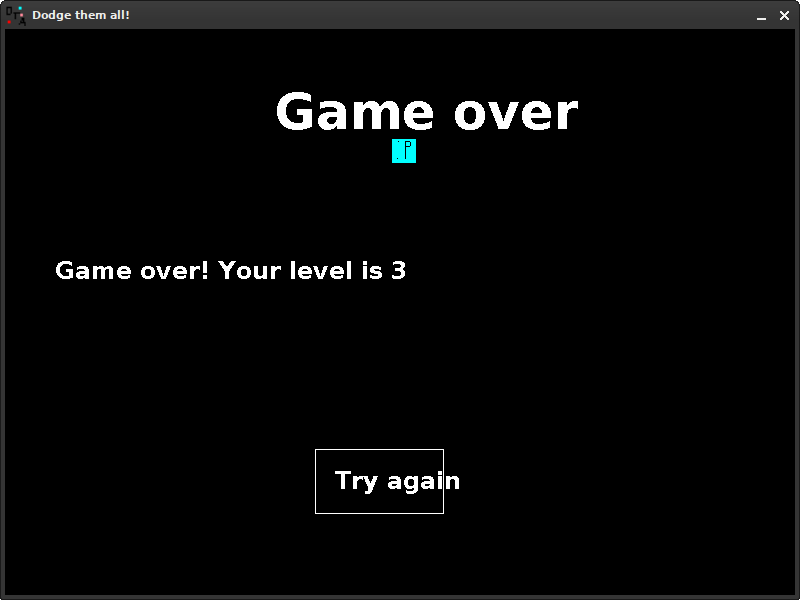
Dodge Them All's game over screen
Yup that's the game over screen. Looks basic, just like everything else in this game. I mean, the description did state that its art was made in paint, so at least it's not lying. By the way, did you notice that cyan square guy? That's the result of me having absolutely no idea what the actual hell i was doing, so for whatever reason not all enemies actually de-spawned when you game-overed.
The game also has a boss, which is just a big red square shooting bullets, but I can't bother myself to actually play the game enough to get to it. Maybe you'll reach it, it's not that hard.
The game also features a shop where you can buy upgrades. You can upgrade your speed (I don't know why you would do that in a bullet-hell game), upgrade max health and refill health, all for coins you collect. Every time you buy something, it gets more and more expensive.
This game actually has settings. They don't save, so they reset every time you start the game. There's a total of three settings: skin, enable/disable trail and developer mode
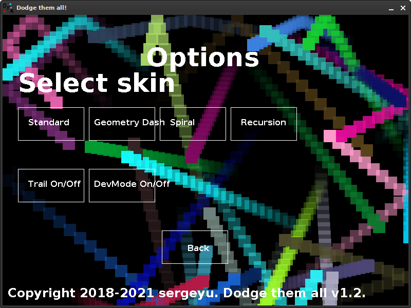
Settings screen
The game has four skins to choose from: Standard, Geometry Dash, Spiral and Recursion. Here's how each skin looks like:
| Skin | Name |
|---|---|
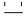 |
Standard |
| Geometry Dash | |
| Spiral | |
| Recursion |
This option is pretty self-explainatory. It allows you to disable trail in the game altogether, possibly boosting framerate.
This game has a developer mode built right in. It enables certain keys on the keyboard to do certain mischievous things.
| Key | Function |
|---|---|
| 1 | Spawn a random enemy |
| 2 | Spawn a basic enemy |
| 3 | Spawn a fast enemy |
| 4 | Spawn a smart enemy |
| 5 | Spawn a boss enemy |
| 6 | Spawn a crazy enemy |
| Escape | Quit the game (yes, this is locked behind developer mode) |
| R | Refill health back to 100 |
| P | Print all game objects into the console |
| O | Set level to 8 |
| I | Die instantly |
There's one last thing I want to talk about before ending this section, and that is the game's sounds.
The game's soundtrack is super basic and quite mid. It was made in a program called Bosca Ceoil, which is a simple tool for making music. There's nothing very special about it and it's like ten seconds long.
The sound effects are all "retro-styled" as the description puts it. They're all quite basic and not really worth talking about in depth.
When decompiling the game, I stumbled upon some interesting things, and in this section we'll take a look at them.
Incorrect ID: (the ID). If this message is showing after you modded the game, make sure that player's ID (player creating is in Game.java) is set to ID.Player. But if this message is showing if you did not mod the game, contact developer of the game. Error code: Error.IncorrectID
i really thought people would mod this game.At some point, I started working on a remake of this game using the Unity engine. It had three-dimensional graphics, original sprites and that's as far as I remember of this game. I unfortunately can't show it to you since I lost the source code and don't have any screenshots.
Dodge Them All truly shows how much I have come in game development and programming in general in a relatively short amount of time (~3 years). And even if this game isn't that special or that good, it still holds a special place in my heart.
About a year after the release of DTA, I remade the entire game in Electron using JavaScript. Unlike the original, the rewrite is actually open source and can be found here, on GitHub. However, running it isn't as easy as just downloading and running an executable - you'll have to install Node.JS and Electron. I might want to publish pre-compiled builds.
I don't really consider this one "unfinished" per se, since I see the game as very complete, but there were some features I wanted to include that didn't make the final cut.
When I tried to compile the game, I encountered several compilation issues. Luckily, all the compiled files were included in the source code, which is generally not what you're supposed to do but I didn't really know how to keep a GitHub repository back then so I'll let this one slide.
Unlike the last game, this one runs really well. Here's the title screen:
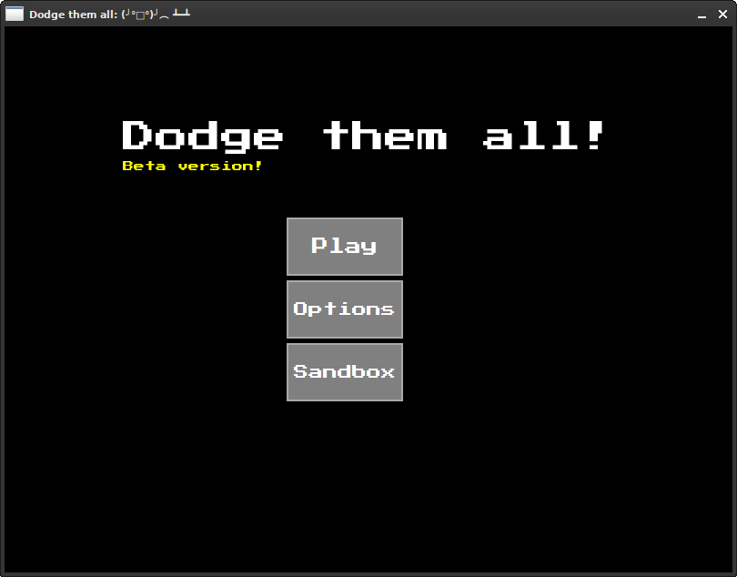
DTARW title screen
Do you see it? A STYLIZED FONT!! Yep, instead of using a default font, this time we have a good font. That is very nice indeed. As per usual, the game's name, three buttons. Except this time, instead of an exit button we have a sandbox button. The sandbox is a feature that was supposed to be included in the original game, but in a tragic series of events I lost the original source code and couldn't write the feature anymore. Oh well. Instead of a yellow splash screen, we instead have a "Beta version!" label below the title text. This actually is a beta version, because I wanted to implement a couple features but I'm lazy ahh hell and I just forgot. Splash text is still in the game, but in a different form - now the game modifies the title of the window instead of adding text on the title screen. There are a total of a lot of splashes, half of which are keyboard puns and jokes about this game being a rage game.
Enough rambling let's get into the action!!!!!!
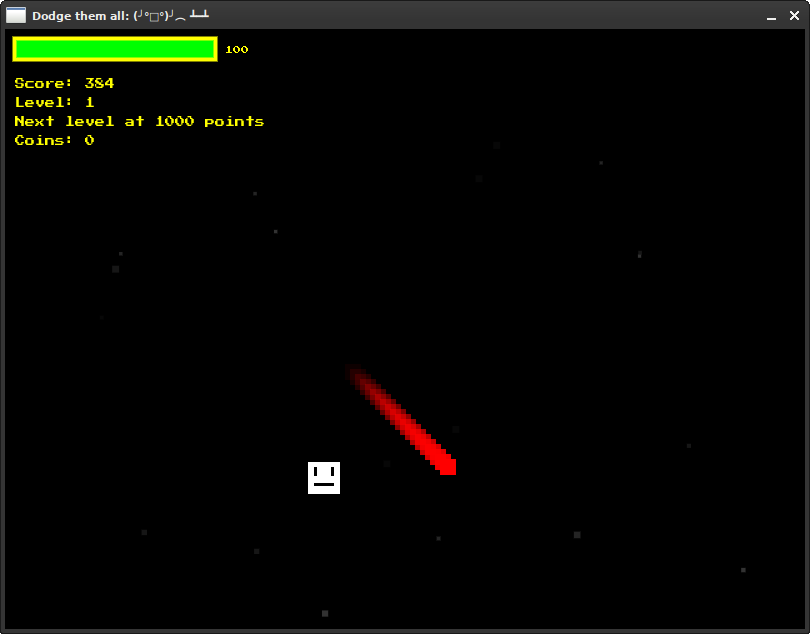
DTARW gameplay
First impressions: way better than DTA. The background has little gray particles that kinda look like stars, the HUD is way better and the performance is ten billion percent better. You can even pause it by pressing Escape! The original game also technically had pause functionality when you go into the shop but having a dedicated pause screen is way nicer.
And what do you see? An enemy! The game prepares you to dodge enemies right from the beginning instead of giving you a random coin and expecting you to collect it. The scoring system was also changed quite a bit. Instead of score being incremented every time you pick up a coin (which can be super difficult when reaching higher levels with more enemies), score instead goes up automatically each frame. The shop is still here, and worse than ever. The only item in the shop is a health boost - +10HP for 7 coins. Inflation really hit DTA...
The rewrite still includes all of the same enemies that the original Java edition has, but more. Here's the full list of new guys that joined the family:
There's also the boss, but I'm not sure if he's actually functional. It's definitely a bug, since code that spawns the boss is included and I remember it working. IDK...
One of the defining features of this remake is the sandbox. This is a place where you can make your custom enemy!
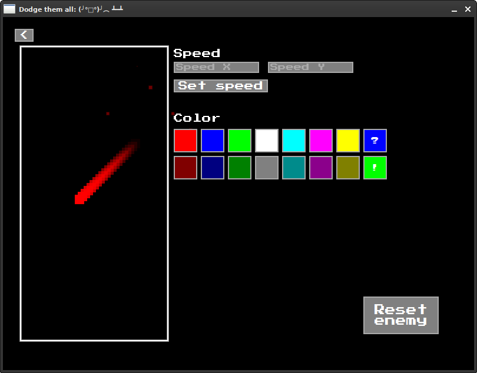
Sandbox screen
I'm quite proud of this interface. So clean, so nice... Designing this was an absolute nightmare because of the sheer amount of UI elements in the sandbox. On the left, we have our custom enemy. He's in a box and can never escape. On the right, we can change the enemy however we want. First, we have the speed controls - changing the X and Y velocity. Below that is the enemy color chooser - red, green, blue, white, cyan, magenta, yellow and dark versions of all of them. There are two special buttons. The "?" button decides a color at random, and the "!" button brings up a box where you can set a color yourself based on RGB values. On the very bottom there is an enemy reset button which resets the enemy back to the same as a red one. Yeah, the sandbox is a bit underwhelming, but it is what it is.
The game does a bit better in terms of sound design. They're still "retro-styled" and there is nothing to say about them. They're alright. There's no background music to accompany you, though... I think that's better, actually. The ten-second track from the original can definitely make someone go nuts if they play for an extended period of time. Not that anyone would do that, however.
The Dodge Them All Rewrite is just a better, shinier, faster version of Dodge Them All. I don't know what to say, really. It's great, you should play it if you really want to idk do whatever tf you want i don't care
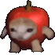
This entry is very much unfinished.JSHS is a simple home server software written in JavaScript. I made it when trying to make a home server. But then I found out about CasaOS, which is a lot better, better, better, and also prettier. JSHS features a simple file manager, very primitive security in the form of a single password, and that's basically it. I abandoned it once I found about about CasaOS, which was way better and more mature.
Pikurosu is a Nonogram/Picross game for PC. It was superseded by nonoSharp, which is active and isn't pure spaghetti code. I stopped working on this when I found out that C isn't a great language for game dev (some might argue), and I was much more familiar with C#. So I switched to C# and made nonoSharp.
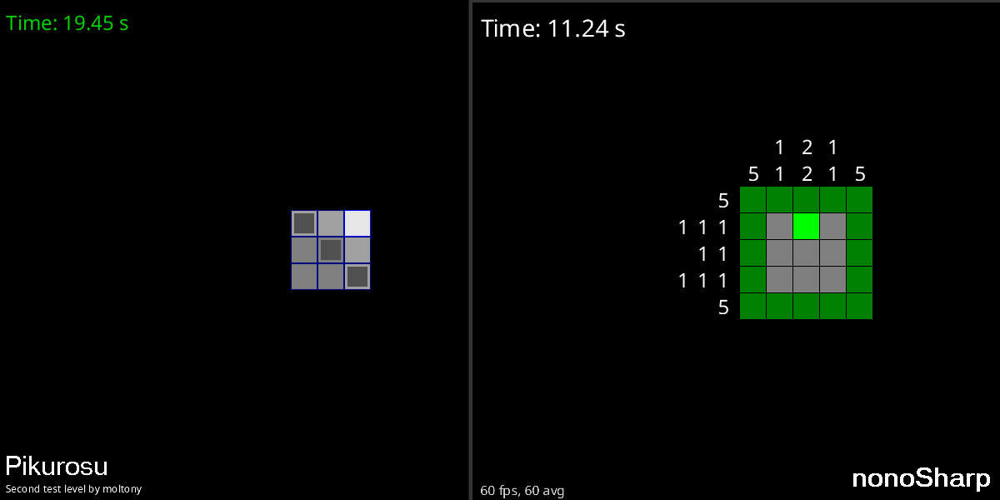
Comparison of pikurosu and nonoSharp
NO NOT DTA AGAIN!!! This was supposed to be a rewrite of DTARW in C++. I simply did not want to. I'm done with this square dodge square thing!
a rewrite of a rewrite...
Number Go Up is a very very very simple game where you have to make the number go up
I abandoned this one because I don't use Windows anymore on my system and setting up GMS2 (which is the engine this game uses), well I'm too lazy for that
you spam your keyboard and number go up
number goes down
lwgh is a CLI tool for accessing GitHub. I made it back when I didn't like using the browser at all, but looking back... Browser is better anyway. Besides, the code I wrote for this little app was very spaghetti early on.
NDSvi is a text editor for the Nintendo DS heavily inspired by Vi. I created it because I wanted to edit some random save file manually for DS-Craft, but couldn't find a text editor app for the DS, at least not one that supported editing arbitrary files. In the middle of making this editor, I discovered that it's possible to edit the melonDS emulated SD card files by simply removing the SD card image, editing the synced files in the SD card sync folder and then opening the emulator. Does that make sense?..
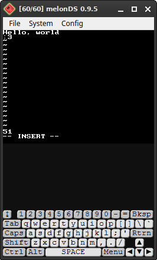
NDSvi running in melonDS
This is quite familiar to any of you who use Vim (myself included). The editor is in insert mode, some text is in the buffer, and the touch keyboard is there. How nice.
In the state that it's in, NDSvi supports the following features from Vi:
Despite supporting many cool Vi features, it doesn't have scrolling, hjkl, and its architecture is overall flawed.
PaintDS is a painting program for the Nintendo DS written in C. I created it because, as is the case with NDSvi, I couldn't find a painting application for the DS. I stopped developing this one because of two reasons: poor architecture and me not being able to display text, like, at all, no matter how hard i tried. Let's take a look at it!
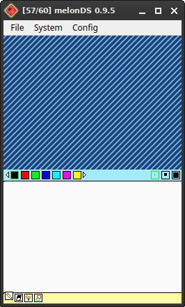
Paint DS running in melonDS
The top screen is the least interesting part. It's just a scrolling line pattern, intended just so that there's something on the top screen. All the painting tools are on the bottom screen. On the bottom bar there are four tools: Pencil, Eraser, Fill and Shapes. On the top are the tool properties. Let's take a look at each tool.
The pencil tool is quite straightforward: touch the screen and draw whatever you like. You can even choose the color you want to draw with! There's black, red, green, blue, cyan, magenta, yellow, gray, dark red, dark green, dark blue, dark cyan, dark magenta and dark yellow. If you're wondering why there's no white color, that's because the eraser is used to draw in white (we'll look at the eraser in a bit). You can also choose the width of the stroke: thin, medium and T H I C C. And that is all, no more, no less.
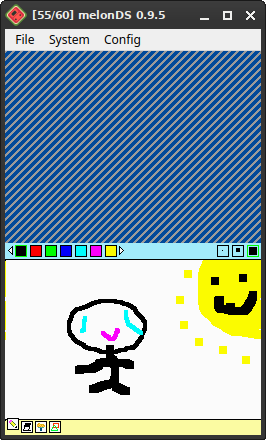
A (poorly drawn) picture drawn using the Pencil tool.
The eraser tool is used to erase stuff. By "erase" I mean draw with white. Yeah, this app doesn't support transparency, so that's pretty much expected. You can either erase, wipe the whole screen or do a fill eraser (fill with white).
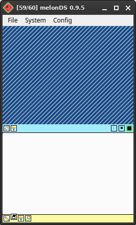
The eraser tool interface
The fill tool is used to... fill. The color can be chosen from the same palette as the pencil tool.
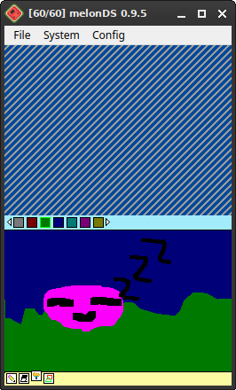
The fill tool in action
The last tool available in Paint DS is the shape tool. It allows for the insertion of one of the five available shapes: triangle outline, filled triangle, straight line, rectangle outline and filled rectangle. The color selection is the same as always.
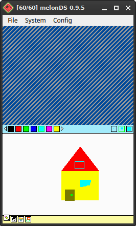
A primitive house created using the shape tool.
This thing has one singular sound: the pencil sound. It plays when you draw.
Paint DS is an application with huge potential! It can allow people to create art on the go and that's... pretty much it? I don't know how to market a painting app. Anyway, this is cool and all but the architecture was absolute garbage. And I couldn't figure out how to draw text on the screen.
DS-Craft (not to be confused with other projects sharing a similar name) is a Minecraft demake for the Nintendo DS that coincidentally infringes on copyright.
I have been putting off this entry since September of last year. But now, I'm actually writing it. I've just been very busy playing games and watching anime mostly.
Before diving into why I stopped developing this fairly big project and its technical debt stuff, let's dive into the gameplay of this very buggy and unoptimized mess.
The version we'll be looking at is beta1.7.1, the last full release. There have been quite a few commits since then but I can't be bothered to install the dev tools on my computer right now.
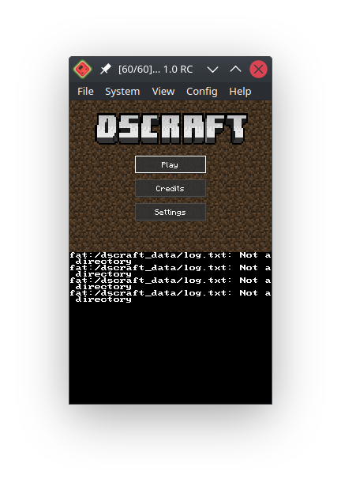
DS-Craft title screen.
What a beautiful title screen. With the logo on the top, three nice buttons and...
...errors? Right away?
Well, they don't seem to be causing any harm so let's press play and make a new world. Besides, they go away once the game is restarted, so there's no reason to worry about them.
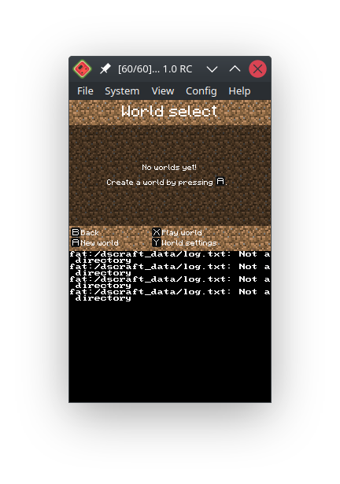
World selection screen
What a nice little screen. Unfortunately, we don't have any worlds. Let's make one, then, shall we?
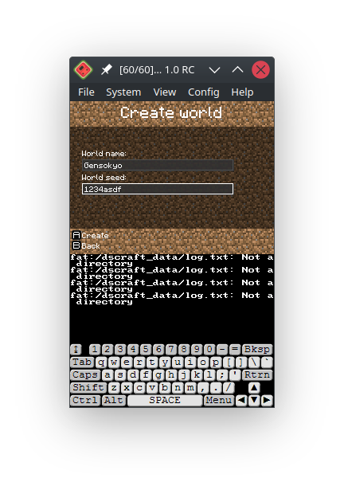
World creation screen
Can you tell I'm a Touhou fan? :)
Anyway, the world has been created. Here's how it looks in the world selection screen:
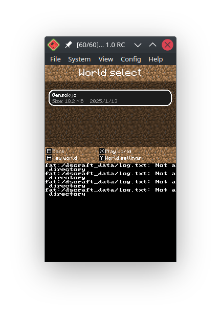
World selection screen with our new world
Let's hop into it, and!..
...
It uhh crashed
I have been aware of this issue for quite some time now, new worlds are sometimes broken. I have not really been able to find a fix to this issue, so the only solution is to make worlds over and over again, hoping that, eventually, one of them will work.
After what felt like hours of opening the game, creating the world and seeing the dreaded "Shutdown" message, we see this.
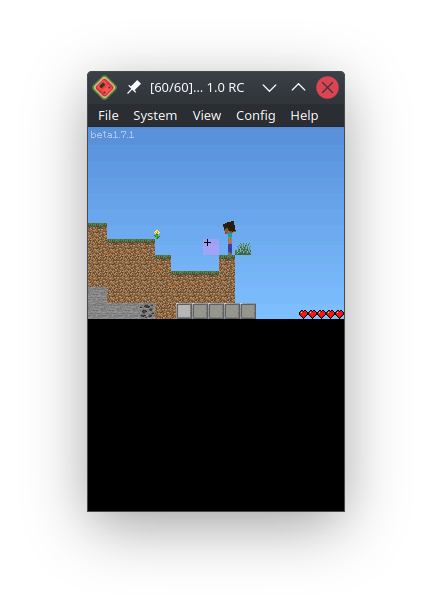
Epic gameplay
Oh my, what do we see here. This certainly does look like Minecraft, since I literally stole its textures. We also see some glitchy floating grass and the world is casually just chopped off in the middle. There's also a health bar on the bottom and the hotbar of five slots as well.
This game even has living creatures other than the player in the form of the pig!
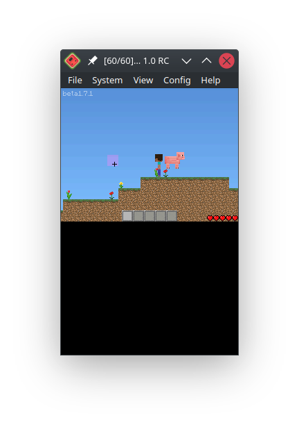
Epic pig
Its code is super janky and it often falls off the world, they're not very important anyway.
Let's build something, this is Minecraft after all. Aiming is done via the touchscreen, moving is done using the D-pad, and the buttons are for different actions. Key bindings are able to be changed in the settings. To build something, we'll need some blocks first.
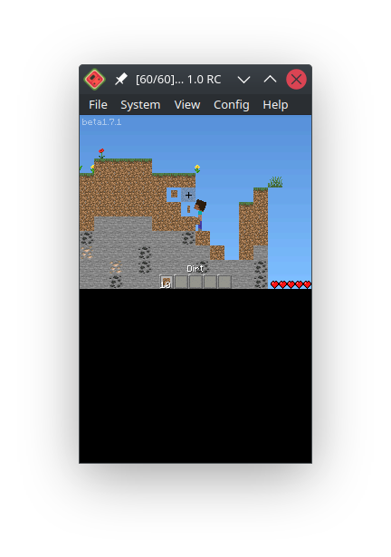
Mining blocks and stuff
And here's our little dirt shack.
The classic dirt house
Well, that's our little house with no entrance or exit. There are actually doors and trees and other interesting blocks in the game but since I got such an unfortunate world, I only have dirt and flowers. Can't even make any tools! Not like it matters anyway.
There's much more content in the game that what is covered here, but this isn't really a game journal article, so let's get straight to the:
And there's quite a bit, and also many that I may have missed.
Why the hell did I make DS games if I didn't own a DS? For the challenge factor? I can't remember and I don't think it matters. Me not having a real DS, only relying on emulators, has resulted in the game being, at the very least, not very easily installable on the real deal, the only testing the game got was on an emulated environment, where everything Just Works™. I don't make games for this system anymore for reasons that I really hope are obvious now.
As mentioned earlier, and very obvious when looking at screenshots, basically every single one of the game's assets is straight-up ripped from Minecraft. Only some textures are changed to fit the limited, flat two-dimensional world. Even the sounds are stolen. I could have taken the textures from some resource pack under a permissive license and found the sounds on something like freesound, but the clueless, young and foolish me at the time didn't really know about copyright too much, so... that doesn't make anything better. Probably makes it worse. Don't be surprised if the repository for the game gets taken down, if it does, I'll try what I can to replace all the assets.
Slight warning: nerd talk ahead. Do not be confused if you can't understand some sectinos. This is more of a code review more than anything, skip this section if you don't feel like burdening yourself with the technical stuff. I did try to provide explanations for some terms that you can find below this section, but if you don't really get it, that's okay. I don't really get it either.
A sidenote slighter than the warning above: all the self roasting is genuine, and I don't know about you, but... I think that's a good thing. Roasting your old self means you have grown as a person. Even if I lean a bit into the negative tone.
This game's code is pretty bad, filled with TODOs, being very long (I'm talking literal thousands of lines for some files) and very unmaintainable.
We'll bisect the problematic sections. Piece. By. Piece.
The Game class1 is what happens when you shove everything, and I mean EVERYTHING together into one, single, unnavigatable, unmaintainable, demonically long file, of 2832 lines that make you wish you had never even started.
makes it sound kind of scary, huh? That's because it is. I still get nightmares from this game's obnoxiously convoluted code.
When taking a marathon-long stroll in the file, we can notice that every single game state is handled here. This would be fine if all the game states were in their own separate files, having everything neatly organized where it needs to be, but nuh uh. All the code for the UI, all the calls to update blocks and the player, everything is in two giant functions of the Game class: update() and its malevolent sibling, draw().
There are also like zero comments2, besides the occasional depression-filled cry for help or explaining something very obvious if you have these things called eyes.
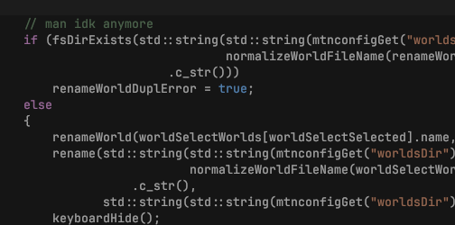
Well, me neither!
If I were to rewrite this game class, given infinite time, my current knowledge and some delicious pu'er tea while we're at it, I would split everything into its own file. That would make everything so much easier to maintain and find!
The Player class is really important: it handles the player. And also playing block sounds. And the entire HUD. And the sign editing interface (yes, this game has signs that you can write stuff on). And the chest interaction interface. And spawning block particles that appear upon breaking blocks. And maybe some other things I haven't been able to find, but that should give you an idea of how much bloat and crap is inside my poor code.
Also, the way block placing and breaking is done is borderline stupid. These two actions are both a giant switch statement3 that just have the exact same code, but the block class is changed to correspond with the item. Madness in its purest form.
Also (also), something that should at a first glance be handled by the player class - picking up items - is done in the Game class instead??? Why is it handled there??? I am at a loss for words, next terribly written file, please.
If I were to rewrite this player class under the save conditions as above, I would move everything into its own class. Player in its own class, HUD in its own class, inventory... ahh yeah it's already in its own class. But it's still drawn by the player for some reason, so I'd move the code for drawing inventories into the inventory class as well. That would be nead. And, of course, move every other major feature that the player class does that it probably shouldn't, into its own class.
Item and block ID conversions are necessary for saving the game. IDs of blocks and items are saved in a different way in save files than in the actual game. This isn't something out of the ordinary, conversions tend to happen often in game save files, but they should not be written like in DS-Craft.
Our current example is item.cpp, a file containing both the implementation for the InventoryItem class (which is pretty straightforward, no complaints here) and the ID conversion functions. We're going to discuss the latter because these are lazy, copy-pasted functions that, while they do work, they are insanely long and kind of not very good.
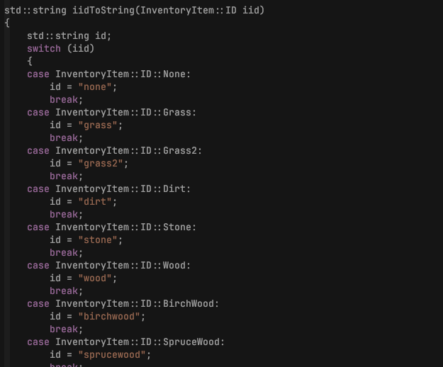
And it just goes on and on and on...
The first function we'll look at iidToString, which, as you might be able to guess, converts an item ID to a string. Save files in this game store the item IDs as strings, not numbers! Why, you might ask? Can't you just turn the enums4 into numbers (like you already do in some places!) directly? And the answer is yes, yes I can, but Youngtony (let's give this cringe name to past, cringe me) decided to organize the item ID enum by putting related items next to each other. This sounds like a good idea, but here's the catch: if we do this and save the item IDs as numbers directly, when we add a new item, we break existing save files and suddenly the player has all their diamonds replaced with dirt or something. I'll give a visual example as well, so you get it.
We'll assume that the table below is the item ID enum for version 1 of the game.
| Item numerical ID | Item name |
|---|---|
| 1 | Dirt |
| 2 | Stone |
| 3 | Diamond |
And now the developer releases version 2 of the game. They add a new item - Watermelons. The developer makes the grave mistake of putting watermelons after stone, however, so the table now looks like this.
| Item numerical ID | Item name |
|---|---|
| 1 | Dirt |
| 2 | Stone |
| 3 | Watermelon |
| 4 | Diamond |
See that? Between version 1 and version 2, item ID 3 became watermelon instead of diamond. Meaning that, if a player opened a world saved back in version 1 in the new version 2, all their diamonds would turn into watermelons. Don't get me wrong, watermelons are cool, but it's so disheartening seeing all your hard-earned diamonds turn into watermelons after updating.
But this mistake is so easy not to do, it would be more baffling if the it's missed during testing than not. So all I had to do was put all the items after the last one, sure, the code would be a bit messier, but that little messiness makes for way, way less typing every time I add one (1) item.
If I were to rewrite this, I would just use numerical IDs in the save files. Save so much effort, even if for a bit of disorganization in the enum.
1. A class defines a structure of an object. A class may define what the object can do and what it has. For example, if you have a car class, it can have a honk() function, which, when executed by the program, will make the car honk. Or do anything, actually, because class function names are arbitrary, though they shouldn't be misleading, as that's bad practice.
2. A comment is some text added in code files that is ignored by the compiler - the thing that turns code into machine code that your computer (or, I guess, in this case, the Nintendo DS) can run. Comments are normally used to help explain what a certain part of the code does, or to mark spots of the code where work needs to be done.
3. A switch statement is like some signs pointing to code. The signs say, for example, "go to the left if the variable A is set to 1", then "go to the right if the variable A is set to 3", and "go straight until you see a big maple ttree, then turn right if the variable A is set to some other value". It's like that but often on a grander scale.
4. An enum, or enumeration for long, is like a list of preset values that a variable can have. For example, let's make an enum for pizza toppings. Our enum will have three possible values: Pepperoni, Pineapples (let's really hope no-one chooses that one!) and Sausages. If we create a pizza topping enum variable, we can only choose from one of the three toppings we defined. Under the hood, enums are just giving numbers fancy names, which is why I mention converting item ID enums directly to numbers, because that's essentially what enums are.
A bit of a bonus fact, enums and switch statements actually go hand-in-hand together.
Finally I have finished writing the above section! As for bilinguality, yes, this game supports two languages: English and Russian, with the former being the default. The way it's done is rather clunky to say the least.
So the game has two fonts: a font for English and a font for Russian. Nothing out of ordinary here. The problem is how they are encoded. Usually Russian (and other non-Latin) characters are renderer using Unicode. Technically Latin scripts use Unicode as well, in most modern contexts. But in DS-Craft, and many older games and software made with languages that use the Latin script as well, we use ASCII. It's way more limited in the amount of characters it can encode than Unicode, because ASCII uses single-byte encoding, and a single byte can only store numbers from 0 to 255 (inclusive). Meanwhile Unicode has the advantage of being a multi-byte encoding, meaning that we can encode thousands upon thousands of different characters, since the bytes add up and allow us to represent bigger and bigger numbers.
DS-Craft, however, being the rubbishly coded, bug-riddled, questionably designed game that it is, uses ASCII for both. This would've been fine if Russian didn't have 33 letters as opposed to English's 26. So what I did is reserve 7 special characters for letters, and if I wanted to use said special characters, I reserved other special characters that I didn't use for those other special characters that have already been taken.
The end result is a damn mess. If I were to handle this problem today with my uhh *looks up "synonyms for the word "great"* preeminent, magnanimous, splendiferous knowldege, I would change the font to encompass every Russian letter, then code up a little function that converts from Unicode code points to the letter indexes in the font image. This would make it much cleaner, even if it adds a bit of complexity. The letters can be saved into a pre-computed look-up table too, though, so the overhead should be minimal. Even on an underpowered little handheld system.
This game, admittedly, has an uncountable number of flaws. Many flaws that are result of me beig young and foolish, for the most part. I like to think of DS-Craft as not something that stands on its own as a full-fledged game, no, not at all! I like to think of this little game as a learning experience. This game is the first time I have used Git extensively, first time writing a serious C++ project, discovering tons of new tools, such as Doxygen and Cppcheck (which, I shall admit, I over-used on this project). I learned lots and lots of things over the course of this game's development.
So, here are my final words about this tiny little game.
It might not be a great game, it might not be the most polished game, it might not be the most fun game, it might not be the most well-written game, it's not an award-winning game, it's not a well-known game, but what matters to me is that it's... mine. It's my learning experience, it's me trying, failing, and learning in the process. Even with all its flaws, broken features, this game really did change me for the better.
This game will always be in my heart.
Writing this made me shed a few salty water drops from my eyes. ok bye i really need to go to sleep right about now.......
of course we have one
this is revision 6
Major version is incremented when a new major change happens, such as adding a new project to the list.
Minor version is incremented when a less major change happens, such as adding a sub-section, style changes or grammar fixes.
Patch version is incremented when a bugfix or very small change happens, such as small typo fixes or HTML formatting.